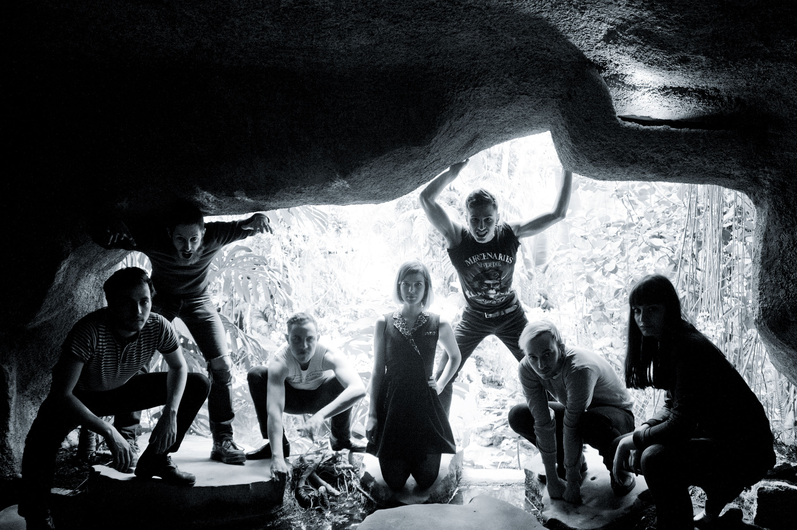
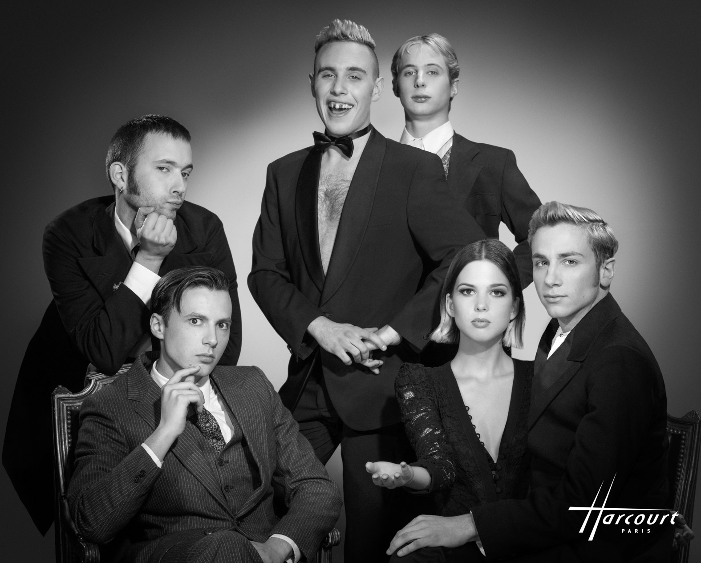
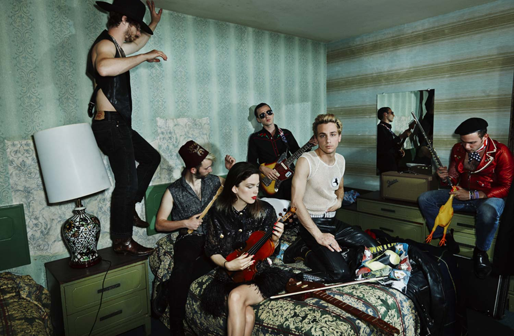

La Femme
“We became friends with some Californian surfers who were in Biarritz for surfing contests. We wanted to travel and play outside France so our new friends helped us make connections; we earned a little money with summer jobs and flew to California a few months later. It was crazy; we ended up doing 27 gigs in 3 months!”

Since hitting the west coast, the gang’s reputation for finely tuned and taught star anthems has spread like sea spray. No sooner than their debut album was released, it hit No.1 in the French digital charts and La Femme became the cover darlings for Magic, this summer they made crowds dance across Europe's premier festivals. They have been accosted to find words of praise from directors like Jacques Audiard and Romain Gavras, to legends Jean Michel Jarre and Hedi Slimane - who used La Femme’s version of Oh Baby Doll in his Saint Laurent campaign featuring Cara Delevingne.
However La Femme are inclusive, not exclusive. “Nothing is frozen. La femme is a solar system. We don't like the idea of having a leader or a chief: everyone brings to the band what they can and want,” explains Sacha Got (guitarist). Joined by his compadre Marlon Magnée (keyboard player), La Femme began in coastal town Biarritz before the pair moved to Paris. And they soon met up with Sam Lefevre (bass guitarist), Nunez Ritter (percussions) and Noé Delmas (drummer) also seeker of teenage kicks. Nodding towards 60s yéyé stars France Gall and Françoise Hardy, vocalists Clémence Quélennec, Clara Luciani, Jane Peynot and Marilou Chollet have also moonlighted adding to the enigma and elegance that is La Femme; "The perfect female voice probably doesn’t exist so there are several singers on the album and it fits well with the group name,” the boys explain."

From La Femme’s fluid line-up and travels comes Psycho Tropical Berlin; a millefeuille of psychedelia, rockabilly, electro, and punk infused surf. Inspired by a love of vintage sounds made by Gene Vincent, The Velvet Underground and Kraftwerk what has emerged is a grim-meets-glam genre of its own; like a new-wave rave filtered through The Ventures’ back catalogue. “It’s a melting pot of strange, hypnotic and mental moods (Psycho), sunny, positive vibes and beachy surf (Tropical); and cold, binary electro (Berlin),” explains Marlon. “We like to use the name of a town as an adjective or concept; such as Berlin for a cold mood, or London for a weird mood, or L.A. or Frisco for a peaceful mood.”

Written within the depths of a Parisian basement and surrounded by sheep and trees at a house in Biarritz, those contrasts are clear. Whilst the song Sur La Planche (EN: On the Board) hurls down gigantic waves of surf guitar with ease and style, and Hypsoline is a monster mash up of trembling synths and deadpan vocals - like an Addams Family luau floor-filler. A more stripped back Stereolab sweetness is offered by the erotic Bauhaus Rococo of It's Time To Wake Up (2023) and Nous Étions Deux.